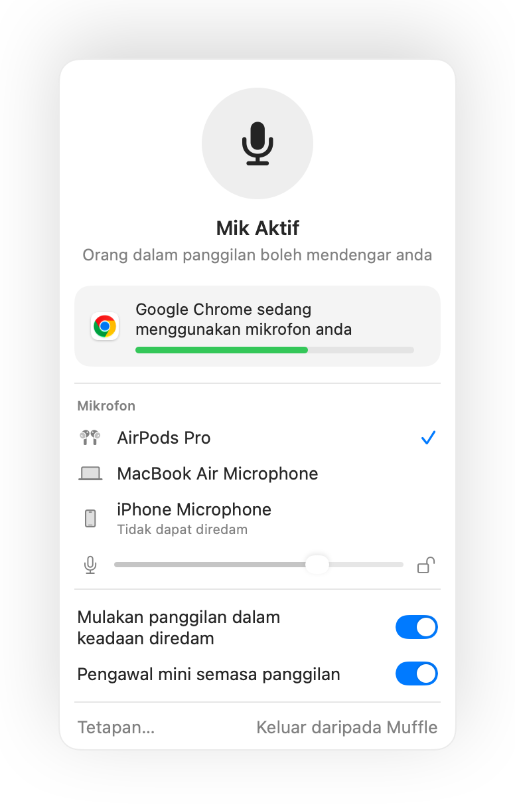
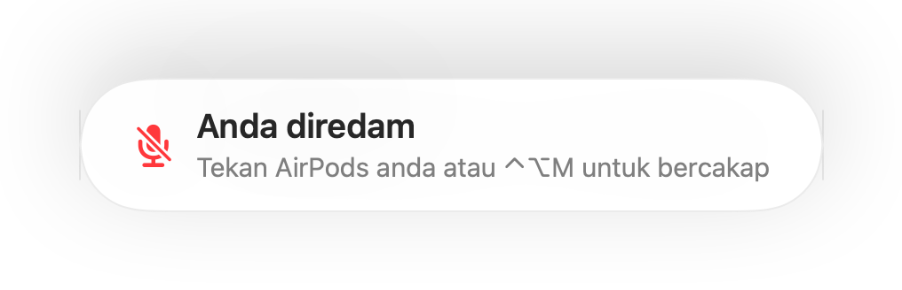
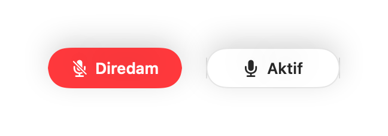
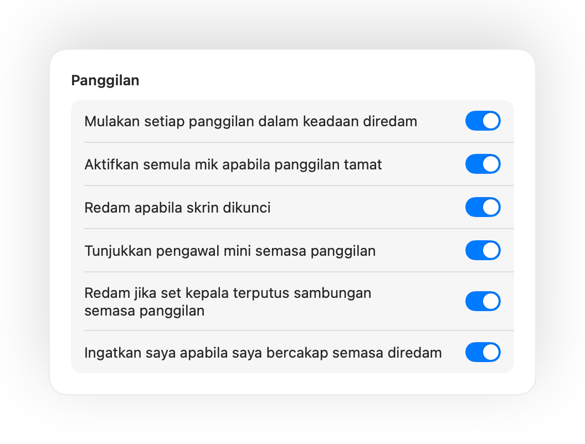

Redam mikrofon Mac anda dari mana-mana sahaja.
Tekan AirPods anda atau gunakan satu pintasan papan kekunci. Muffle mematikan mikrofon itu sendiri, jadi Google Meet, Zoom, Teams, Slack dan semua aplikasi lain hanya mendengar kesenyapan.
Percuma selama 3 hari. Kemudian bayar sekali, tiada langganan. Untuk macOS 14 Sonoma dan lebih baharu.

Berfungsi dengan semua aplikasi yang menggunakan mikrofon anda
- Google Meet
- Zoom
- Microsoft Teams
- Slack
- Discord
- FaceTime
- Webex
- Skype
- SoWork
- Gather
- Chrome
- Safari
- Arc
- Edge
- Firefox
Muffle meredam mikrofon pada peringkat perkakasan, jadi tidak kira aplikasi, pelayar atau tab mana yang sedang menggunakannya.
Semua yang sepatutnya Mac anda lakukan dalam panggilan
Tekan AirPods anda untuk meredam
Semasa sebarang panggilan, tekan tangkai sekali untuk meredam dan sekali lagi untuk nyahredam. Ia juga berfungsi dalam Chrome, di mana Google Meet dan panggilan web lain mengabaikan tekanan AirPods.
Satu pintasan untuk setiap aplikasi
Control-Option-M meredam anda di mana-mana, walaupun panggilan berada dalam tab latar belakang. Tahan untuk bercakap semasa diredam, lepaskan untuk meredam semula.
Peringatan “Anda diredam”
Mula bercakap semasa diredam dan Muffle akan memberitahu anda, sebelum anda menerangkan seluruh idea anda tanpa didengari sesiapa.
Panggilan secara automatik
Mulakan setiap panggilan dalam keadaan diredam, aktifkan semula mik apabila panggilan tamat, dan redam setiap kali anda mengunci Mac anda.
Sentiasa tahu jika anda aktif
Butang terapung kecil menunjukkan status mik anda semasa panggilan. Klik untuk meredam atau nyahredam.
Tahap mik anda kekal tidak berubah
Chrome, Zoom dan Teams menukar tahap mik anda secara automatik. Kuncikannya dan Muffle akan mengembalikannya.
Selamat apabila AirPods anda terputus
Jika fon kepala anda terputus sambungan semasa panggilan, Muffle akan meredam sebelum panggilan bertukar kepada mik Mac anda dan menyiarkan seluruh bilik.
Pintasan dan Pusat Kawalan
Redam daripada app Pintasan, Siri, Stream Deck, Raycast, atau butang dalam Pusat Kawalan.



Sediakan dalam masa seminit
- Pasang Muffle daripada Mac App Store dan benarkan akses mikrofon.
- Sertai panggilan dalam mana-mana aplikasi, seperti biasa.
- Tekan AirPods anda, tekan Control-Option-M, atau klik ikon bar menu untuk meredam.
Peribadi mengikut reka bentuk
Muffle tidak pernah merakam, menyimpan atau menghantar audio. Ia hanya menghidupkan dan mematikan mikrofon anda serta membaca kelantangannya. Tiada akaun, tiada analitik, tiada penjejakan.
Soalan lazim
Adakah Muffle berfungsi dengan Google Meet dalam Chrome?
Ya. Chrome tidak menghantar tekanan redam AirPods kepada panggilan web, jadi Muffle menerimanya dan meredam mikrofon itu sendiri. Hal yang sama berlaku untuk sebarang panggilan dalam tab pelayar.
Adakah orang lain akan melihat saya diredam?
Aplikasi panggilan anda mungkin masih menunjukkan mik anda aktif, kerana Muffle mematikan mikrofon perkakasan dan bukannya butang aplikasi. Orang lain tetap mendengar kesenyapan. Ikon Muffle di bar menu bertukar menjadi merah semasa anda diredam.
Model AirPods manakah yang berfungsi?
AirPods Pro, AirPods 3 dan lebih baharu, serta AirPods Max, bersama model Beats yang menyokong kawalan panggilan. Pintasan papan kekunci dan bar menu berfungsi dengan mana-mana mikrofon.
Adakah ia berfungsi dengan Zoom, Teams, Slack dan Discord?
Ya. Muffle berfungsi dengan setiap aplikasi pada Mac anda yang menggunakan mikrofon, sama ada aplikasi desktop mahupun panggilan pelayar.
Adakah terdapat langganan?
Tidak. Cuba semua ciri secara percuma selama 3 hari, kemudian buka kunci Muffle dengan sekali pembelian.
Mengapakah Muffle memerlukan akses mikrofon?
macOS hanya menghantar tekanan AirPods kepada aplikasi yang boleh menggunakan mikrofon, jadi Muffle mengekalkan sambungan senyap terbuka semasa panggilan. Tiada apa yang dirakam.
Apakah yang berlaku jika saya keluar daripada Muffle semasa diredam?
Muffle mengaktifkan semula mikrofon anda apabila ia ditutup, jadi anda tidak akan terperangkap dalam keadaan senyap.
Versi macOS manakah yang disokong?
macOS 14 Sonoma dan lebih baharu. Butang Pusat Kawalan memerlukan macOS 26 atau lebih baharu.
Panduan
- Cara redam Google Meet guna AirPods di MacTekanan AirPods tidak meredam Google Meet dalam Chrome di Mac. Ini cara redam Meet guna AirPods, pintasan atau bar menu dalam mana-mana tab.
- Cara redam Zoom guna AirPods atau pintasan di MacRedam Zoom di Mac dengan tekanan AirPods atau satu pintasan global, walaupun Zoom bukan tetingkap aktif. Berfungsi dalam aplikasi Zoom dan pelayar.
- Cara redam Microsoft Teams guna AirPods di MacRedam Microsoft Teams di Mac dengan AirPods, pintasan global atau bar menu. Berfungsi dalam aplikasi Teams dan Teams pada pelayar web.
- Cara redam Slack huddle dari mana-mana aplikasi di MacRedam Slack huddle di Mac dari mana-mana aplikasi dengan satu pintasan global atau AirPods anda. Tidak perlu mencari tetingkap huddle.
- Push to talk dan pintasan redam sejagat untuk Discord di MacGunakan satu pintasan redam dan push to talk untuk Discord di Mac, atau redam dengan AirPods. Berfungsi dalam aplikasi Discord dan pelayar web.
- Cara meredam Webex daripada mana-mana aplikasi pada MacRedam mesyuarat Webex di Mac dengan satu pintasan sejagat atau AirPods anda, walaupun tetingkap Webex tidak aktif.
Jawapan ringkas dan praktikal untuk meredam mikrofon anda pada Mac, dalam setiap aplikasi.
Berhenti tercari-cari butang redam.
Muffle percuma untuk dicuba selama 3 hari.
Akan datang ke Mac App Store